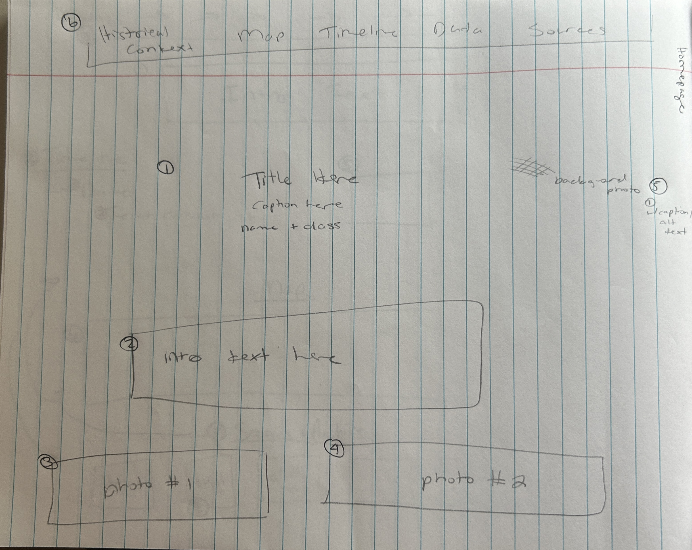
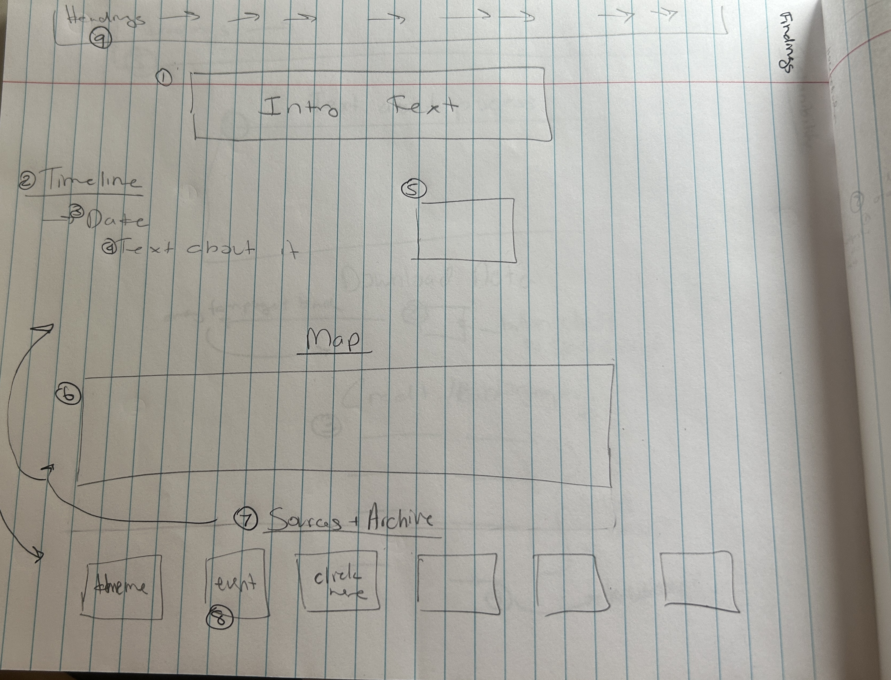
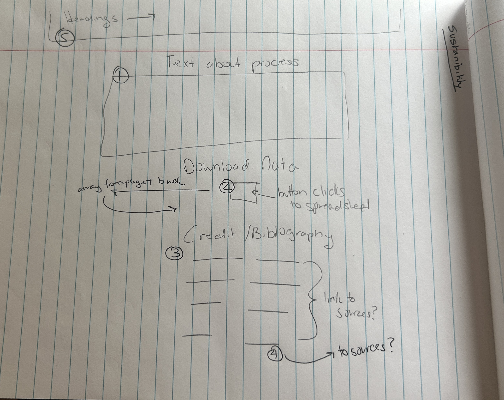

This project uses a combination of historical research and digital humanities tools and methodologies to examine Irish-Indigenous interactions to deeply explore colonialism, solidarity, and memory.
At its core, this project draws on historical sources including archival documents, secondary scholars, maps, and records. This materials provide the foundation for understanding Irish intersections with Indigenous communities. However, historical records are often incomplete or shaped by colonial perspectives. This project is guided by approaches that highlight Indigenous research, which prioritizes community knowledge and lived experience. Knowledge is not only written by shared through oral traditions and community memory. By acknowledging and aiming to use these approaches as well, this project hopes to move beyond purely Western frameworks.
As a digital history project, this site uses tools such as interactive maps (Leaflet), timelines, and curated databases to explore connections across time and space. The goal is to make complex historical interactions more accessible and engaging and bring together diverse sources and perspective to encourage users to interpret the material.
This project requires careful attention to power, colonialism, and identity. Irish immigrants were both subjects of British colonial rule and participants in settler colonial systems. Due to this complexitity, a critical but reflexive approach is required to spark users to question how identites, experiences, and relationships can shift in different contexts.
by combining these methods, this project aims to challenge simplified narratives, highlight multiple perspectives, and creative a more nuanced understanding of the past. It is hoped that the project will allow for a more ethical and inclusive exploration of Irish-Indigenous interactions.
This project is designed for a graduate-level student or general museum-style web visitor who is interested in colonial history, transnational solidarity, and digital storytelling. The user will also prefer visual aids and guided interpretation rather than dense academic text.
The website was designed to guide users through a narrative experience. The homepage introduces the topic, while the findings section integrates timeline, map, and archival materials to support interpretation.


